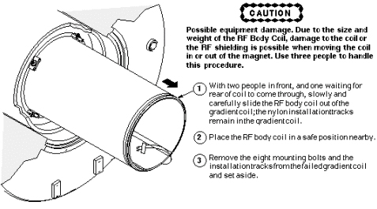

Operating Documentation
Direction 5440001-3, Rev# 6
Signa HDxt Service Methods
Module Version 1.0, Version Date 5/3/07
Operating Documentation |
| Required Persons | Preliminary Reqs | Procedure | Finalization |
|---|---|---|---|
| 3 | Not Applicable | 3-5 | Not Applicable |
| Item | Qty | Effectivity | Part# | Manufacturer | |
|---|---|---|---|---|---|
| Personal Protection Equipment | 1 | - | - | ||
| Composed of : | |||||
| Gloves | 1 | - | - | ||
| Safety Glasses | 1 | - | - | ||
| Safety Shoes | 1 | - | - | ||
| Long Sleeve Shirts and Pants | 1 | - | - | ||
| 5 Gallon Bucket to Collect Coolant | 1 | - | 2239133 | - | |
| Authorized Personnel Floor Sign | 1 | - | 2289812 | - | |
| Non-magnetic Tool Kit | 1 | - | 46-320273G4 | - | |
| Lockout/Tagout Equipment | 1 | - | - | ||
| Item | Qty | Effectivity | Part# | Manufacturer |
|---|---|---|---|---|
| Gradient chiller coolant | 1 | - | 2297672 | - |
| Absorbent Towels | 1 | - | - | - |
| ||||
| Strong Magnetic Field! | ||||
| Ferrous materials can become dangerous projectiles in the presence of the magnetic field Produced by the Signa Magnet. | ||||
| Do not Bring any ferromagnetic tools or equipment into the magnet room. |
| ||||
| Dangerous Work Area! | ||||
| Use of heavy equipment for coil removal and replacement presents hazards to all personnel in the area. | ||||
|
Remove the front bridge cover
Remove the two (2) M6 Phillips screws securing the cover to the front bridge.
Remove the front bridge cover and set aside in a safe location out of the way of traffic.
Detach the two parts of the split bridge by removing the four (4) M10 nuts holding the two sections together. Then, slide the rear part of the bridge by moving the rear pedestal until the two halves of the bridge are completely disengaged.
Detach the front bridge support from the front end bell.
Loosen the lock nuts at the bottom of the support legs.
Remove the two (2) M10 bolts using an adjustable wrench or a 17mm socket wrench.
| NOTE: | It is not necessary to detach the bridge support from the bridge. |
Slide the long section of the bridge out of the magnet bore.
Turn off the gradient cooling lines (inlet and outlet) at the valve located in front of the magnet.
Set the SCC to “Service Mode” by flipping the toggle switch from the top position to the bottom position. This will prevent the Magnet Monitor from dialing out.
Turn System Cooling Cabinet (SCC) off and perform lock-out/tag-out.
Remove both coolant lines from the coil and let drain into a bucket or container.
Disconnect the coaxial cables from the RF coil.
Remove the two (2) coaxial bias lines labeled J3/J5 and J4/J6 at the front and rear of the RF coil.
Remove the two (2) rigid, blue coaxial RF drive cables from the bulkhead at the rear of the RF coil.
Remove the front and rear cover straps located at the interface between the front and rear end bells and the RF coil.
Use a non-magnetic 5/16” slot screwdriver to extend the two (2) feet at the 4 and 8 o’clock positions at the bottom of each end of the RF coil (total of 4 feet) until each foot contacts the gradient coil underneath. See Illustration 1.
Illustration 1: LOCATION OF RF COIL FEET

Remove the bore light caps at the 10 o’clock and 2 o’clock positions on the front end-bell.
Remove the M4 screws securing each cap to the front end-bell.
Remove the bore light caps and relocate to a safe location out of the way of traffic.
Carefully detach (peel) the bore lights from the RF tube surface.
Remove the bore temperature sensor cable from the groove in the front end-bell and detach it from the SRI.
Remove the four (4) M10 screws using a 8mm Allen wrench at predefined positions.
Replace the screws removed in Step 13 by M10 studs.
Open access panels on the front end-bell 8 M6 screws (flat head screw driver) typical at two locations.
| NOTE: | Coolant spillage may occur in the next step. Have absorbent towels available in case this happens. |
Detach the 4 gradient coolant lines from the inside of the end-bell (Push connectors) and, to minimize spillage, fold the lines back onto themselves and temporarily secure into this position with rope-cord or adhesive tape.
Remove the 8 nylon nuts that secure the front end bell to the RF Coil.
Remove the 8 nylon nuts that secure the rear end bell to the RF Coil.
Remove the remaining twenty-four (24) M10 bolts on the front end bell, in a star pattern, using the 8mm Allen wrench.
Completely slide out the front end-bell.
| NOTE: | The rear end-bell is not removed. |
Refer to Illustration 2. Slide the RF coil out of the gradient coil.
| NOTE: | Ignore step 3 in Illustration 2 as there are no mounting bolts on the Twin RF coil. |
Illustration 2: SLIDING OUT RF BODY COIL ON TRACKS

Carefully inspect gaskets on the front and rear end-bells. Confirm that the gasket surface that contacts the RF Coil is in good condition (not nicked, cut, severely deformed or otherwise damaged) and will not leak when subjected to a vacuum. Replace the gasket(s) if damage is found.
No finalization steps.